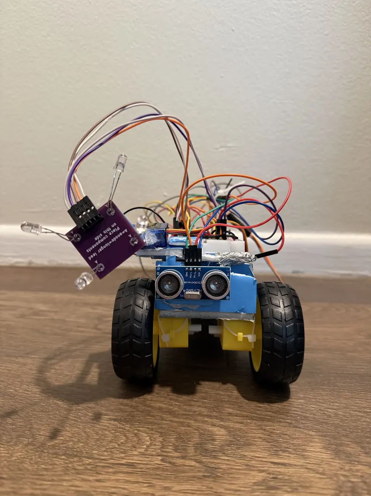
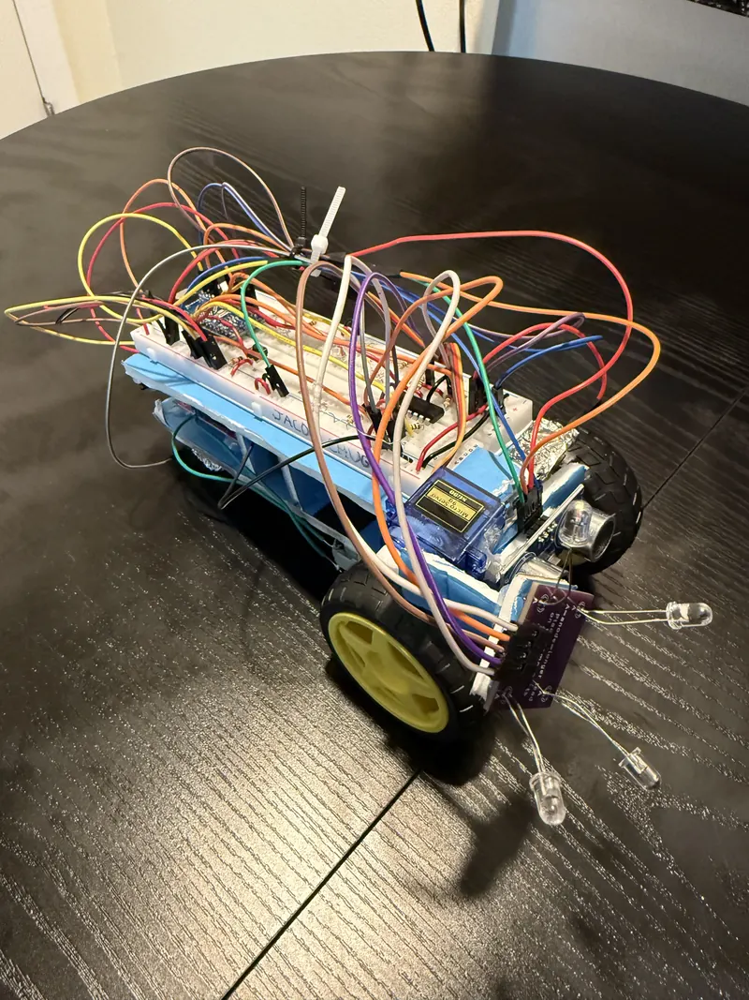

Autonomous Sensor-Based Robot
A battery-powered, two-wheeled robot built around an Arduino Nano, combining photodiode-based directional sensing, ultrasonic collision detection, and a servo-actuated sensor mount to drive autonomous behavior — verified in a graded demonstration.
- Controller
- Arduino Nano
- Sensors
- Photodiodes, Ultrasonic, Collision
- Actuation
- DC Motors, Servo
- Status
- Demonstrated

Sensor-Driven Autonomous Behavior
The robot combines several sensor inputs to control its own movement without outside input: photodiodes for directional light sensing, an ultrasonic sensor for obstacle distance, and collision sensing for direct contact. All of it runs through an Arduino Nano, which drives two DC drive motors and a servo-actuated sensor mount. The complete system's autonomous behavior was verified in a graded demonstration.

Sensor → Controller → Actuator
Three sensor inputs feed the Arduino Nano, which arbitrates between them to drive the motor driver and DC motors for movement, and the servo and LED indicators for tracking and status.
Steering, Tracking, and Collision Stops
Photodiodes mounted on the chassis act as directional light sensors, feeding differential readings to the controller to steer the robot. A servo-actuated mount tilts the forward sensor cluster for tracking beyond a fixed forward direction. A front-mounted ultrasonic sensor continuously measures distance to obstacles ahead and triggers a stop when an object comes within range, while onboard LEDs give visual status indication.
A Working Testbed, Not a Finished Product
The robot integrates a breadboard-prototyped circuit — Arduino Nano, motor driver, sensor wiring, and status LEDs — mounted to a hand-built foam-board chassis. The exposed wiring reflects its function as a sensor-integration testbed rather than a polished product: the engineering value is in the sensor-to-controller-to-actuator integration and verified autonomous behavior, not the aesthetics.

Autonomous Behavior, On Camera
Two short clips from the graded demonstration. Tap to play — video is not set to autoplay.